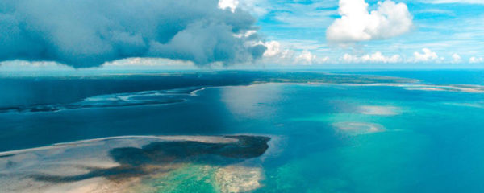
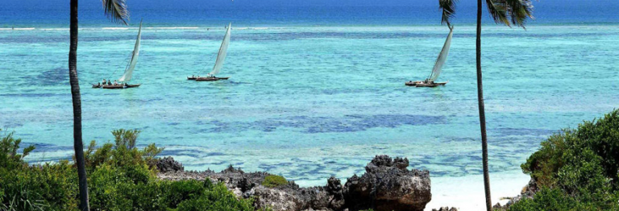
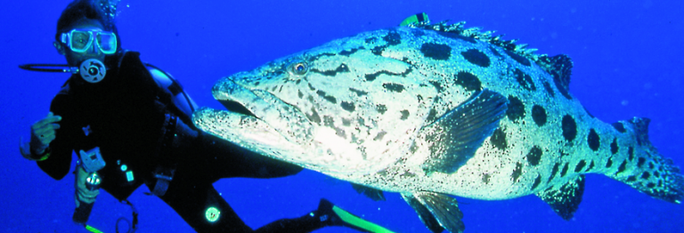
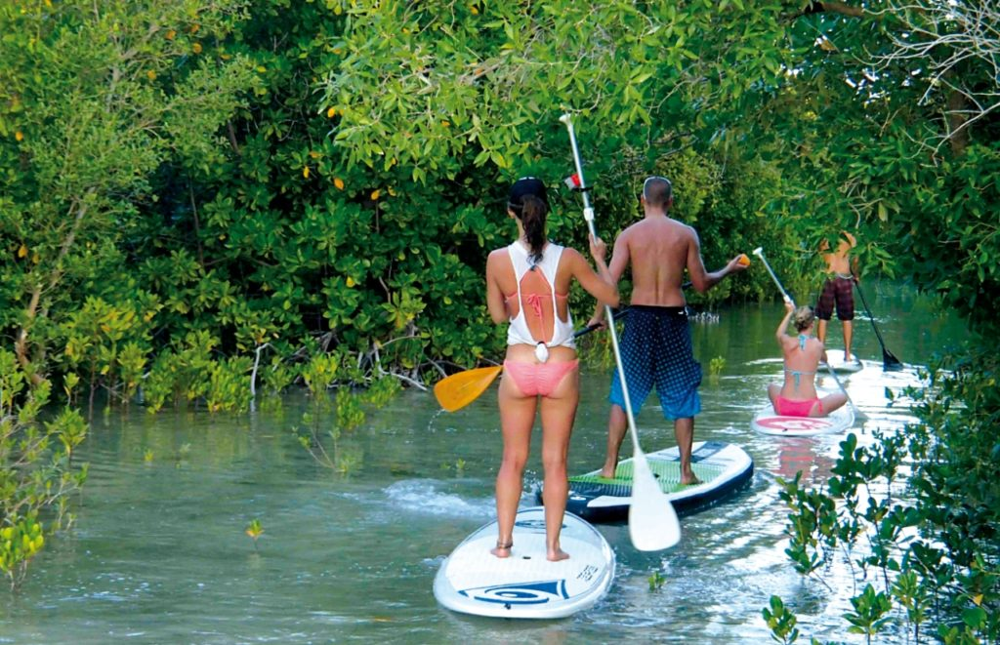
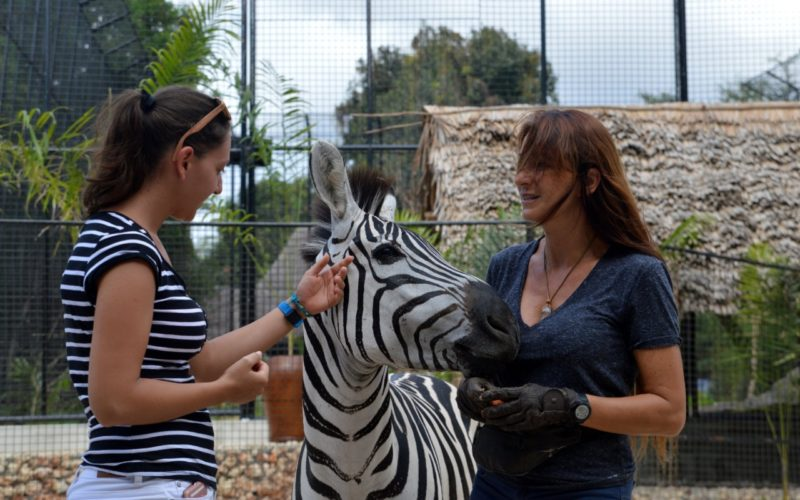

ILE DE MAFIA
L’Ile de Mafia est réputée pour la richesse de ses fonds marins et la plongée à Mafia offre des spots
exceptionnels à tous les amateurs de plongée sous-marine et de snorkeling. La faune et la flore aquatique
y est abondante grâce à la création du Parc marin de Mafia, une réserve maritime qui préserve le milieu
aquatique des récifs coralliens environnant. Ce parc est situé entre le delta du Rufiji River à l’ouest
et l’ouverture sur l’Océan Indien ce qui fait que la réserve maritime bénéficie à la fois de
l’influence de la rivière et de la mer créant ainsi une biodiversité riche et exceptionnelle avec
des paysages uniques en leurs genres sur l’île même et dans la mer. Dauphins, requins et poulpes
géants nagent dans les profondeurs de l’océan.

ILE D'UNGUJA
L’île Unguja est aussi connue sous le nom de l’île de Zanzibar. Elle est séparée du continent africain
par le détroit de Zanzibar et abrite la ville la plus importante qui est aussi la capitale c’est-à-dire
Zanzibar City. Sur l’île Unguja se situe le point culminant de l’archipel de Zanzibar, environ 130 mètres
d’altitude dans la chaine montagneuse de Koani. Les îles environnantes sont des îles coralliennes aux
eaux turquoise qui font la réputation des plages d’Unguja. Au petit matin, le port de l’île d’Unguja
est très animé avec les boutres des pêcheurs retournant de leur sortie en mer et on peut y observer
des poissons de toutes sortes, des variétés de raies, de requins et des poissons insolites
. Les boutres font partie du paysage marin de Zanzibar et on peut les voir évoluer dans les eaux
turquoise, le long des plages d’Unguja.

ILE PEMBA
Les Omanais l’appelaient déjà « the green island » car elle est recouverte de nombreuses collines aux
terres riches et à la végétation luxuriante. Située à environ 80 km au nord de Zanzibar, l’Ile Pemba
est célèbre pour les richesses naturelles de son écosystème notamment ses plages paradisiaques et ses
récifs de coraux qui entourent l’Ile offrant ainsi de nombreux spots de plongée sous-marine et de
snorkeling à couper le souffle. C’est la terre de prédilection pour la production de clous de
girofle et visiter l’île Pemba gardera vos sens en éveil avec les parfums d’épices odorants.
La végétation est luxuriante, rizières, plantations de bananiers et d’ananas…
L’élevage de bovins, la pêche, la culture des fruits exotiques et des légumes constituent les
autres secteurs économiques de l’Ile Pemba.

ACTIVITE
Un tour en SUP dans les mangroves
Une super activité ! Les forêts de mangroves sont des forêts qui se trouvent dans les zones tropicales à marée basse
, en particulier près des deltas et le long des côtes. Les forêts semblent flotter sur l’eau. Si vous êtes amateur
d’activités un peu spectaculaires, de nature et d’eau, alors cette activité est pour vous !

ACTIVITE
Cheetah’s rock est un centre de sauvetage pour animaux sauvages vraiment spécial. Nous avons souvent
vu des refuges pour animaux sauvages où l’on peut approcher les animaux et en général, ce n’est
malheureusement pas beau à voir… les animaux sont drogués et vivent dans de mauvaises conditions.
Mais au Cheetah’s rock, nous avons été très agréablement surpris. Cheetah’s rock est dirigé par une
femme passionnée et amoureuse des animaux.